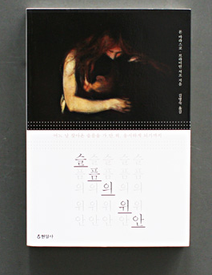

|  | 
|
 |
| 슬픔의 발생과 과정, 그 모든 감정에 대한 공감과 성찰을 전하는 에세이 슬퍼하되 패닉에는 빠지지 말아라. -슬픔의 위안 中 |
"혼자만의 어둠 속에서, 사람은 계속 누군가를 기다리는 존재인지도 모른다." 자신이 지구 위에 있다는 기분이, 타인의 존재와 함께 찾아들었다. -어둠 속의 기다림 中- |
운다고 달라지는 일은 없겠지만, 운다고 해결될 일도 아니겠지만, 그럼에도 시인은 말한다. "울고 싶을 때는 울어도 된다"고 |